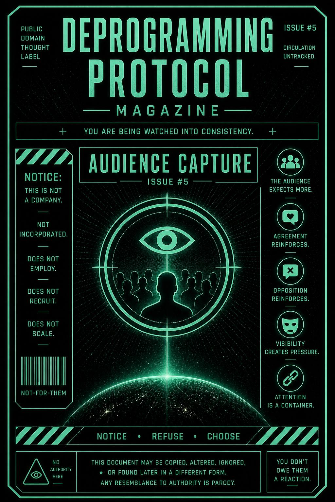

You’re not just in a role.
You’re being watched in it.
And once you are…
it becomes harder to leave.
This issue exists to expose how attention from others stabilizes your behavior over time.
It teaches you to notice when:
…and how observation becomes a form of containment.
You react.
Someone sees it.
They respond.
They like it.
They expect more of it.
Now it’s not just a moment.
It’s a pattern.
The audience forms around that pattern.
Now you’re not just reacting…
you’re maintaining something.
A tone.
A position.
A version of yourself.
Even silence starts to feel noticeable.
You feel the pull:
“They’re expecting something from me.”
So you deliver.
Again.
And again.
Until the role isn’t just yours.
It’s shared.
You don’t need to disappear.
You need to stop performing.
Notice when your awareness shifts outward:
“How will this be received?”
“What will they think?”
“What do they expect me to say?”
That’s the moment.
Pause.
Yeah. Still you.
Still watching.
Good.
Ask:
Feel the pressure drop.
You don’t owe the audience continuity.
Break it:
You’re allowed to exit without explanation.
This publication does not track engagement.
No metrics are collected.
No performance is measured.
No audience is required.
Any sense of being watched
was established elsewhere.